Piękne wysoki standard - ciche Wilno + 2 miejsca
Pohulanka, Warszawa Elsnerów
1 290 000 PLN
69 m2
3 pokoje
1 piętro
Szukasz komfortowego mieszkania w zielonej i spokojnej okolicy, ale z szybkim dojazdem do centrum? Ta nieruchomość łączy wysoki standard wykończenia, funkcjonalny układ i kameralne otoczenie.
Oferuję na sprzedaż nowoczesne mieszkanie o powierzchni 68,48 m², położone na 1. piętrze w 3-piętrowym budynku z 2018 roku. Nieruchomość znajduje się na zamkniętym, zadbanym osiedlu z niską zabudową, otoczonym zielenią, alejkami spacerowymi i estetycznymi nasadzeniami.
Układ i funkcjonalność
- Mieszkanie zostało zaprojektowane z myślą o wygodzie codziennego życia.
- Przestronny, dobrze doświetlony salon z wyjściem na loggię stanowi centralny punkt mieszkania.
- Półotwarta kuchnia jest w pełni wyposażona i bardzo funkcjonalna.
- Dwie oddzielne sypialnie zapewniają komfort i prywatność.
- Dodatkowym atutem są dwie łazienki - jedna z prysznicem typu walk-in, druga z wanną z hydromasażem.
Standard i wyposażenie
Mieszkanie wykończone w wysokim standardzie, w ponadczasowej jasnej kolorystyce - dominują biele i naturalne odcienie, które optycznie powiększają przestrzeń i nadają jej elegancji.
Wnętrze zostało dopracowane w każdym detalu:
- zabudowy szaf wykonane na wymiar,
- klimatyzacja z funkcją oczyszczania powietrza,
- ogrzewanie podłogowe (kaloryfer kanałowy z nawiewem) w salonie,
- dwa kominki elektryczne tworzące wyjątkowy klimat,
- nowoczesne, regulowane oświetlenie.
Mieszkanie nie wymaga żadnych nakładów finansowych - jest gotowe do zamieszkania od zaraz.
Dodatkowe informacje
Do mieszkania przynależą dwa miejsca postojowe w garażu podziemnym - dodatkowo płatne po 45 000 zł każde.
Osiedle
Nowoczesne, monitorowane osiedle z kontrolą dostępu zapewnia bezpieczeństwo i komfort mieszkańców.
Na terenie znajdują się place zabaw, boisko oraz strefy wypoczynku. Całość utrzymana w zielonym, kameralnym charakterze.
Lokalizacja i komunikacja
Osiedle Wilno to spokojna, zielona część Targówka z bardzo dobrą komunikacją: autobusy 170, 156, 356, +. kolej SKM/KM - przystanek Zacisze Wilno (ok. 5 minut do metra Wileńska) + szybki dostęp do trasy S8.
W okolicy pełna infrastruktura: sklepy, restauracje, punkty usługowe, szkoły i przedszkola. Nie brakuje także terenów zielonych sprzyjających spacerom i rekreacji.
To mieszkanie to idealna propozycja dla osób, które szukają połączenia komfortu, estetyki i spokoju, bez rezygnacji z wygodnego dostępu do miasta.
--> Zapraszam do kontaktu i na prezentację - to mieszkanie najlepiej docenić na żywo.
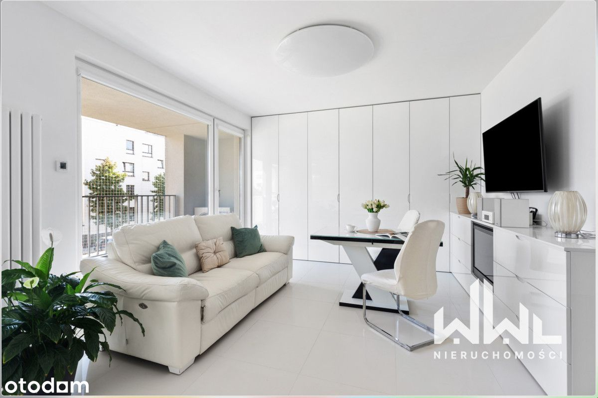
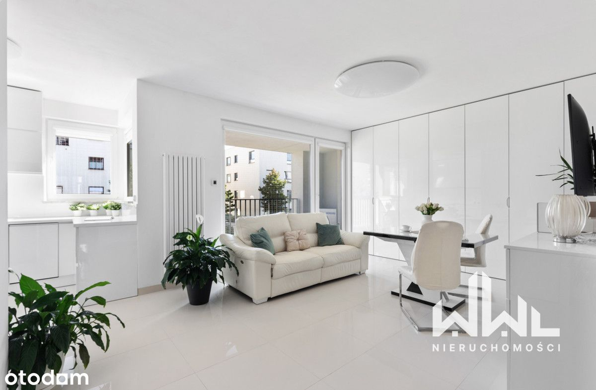
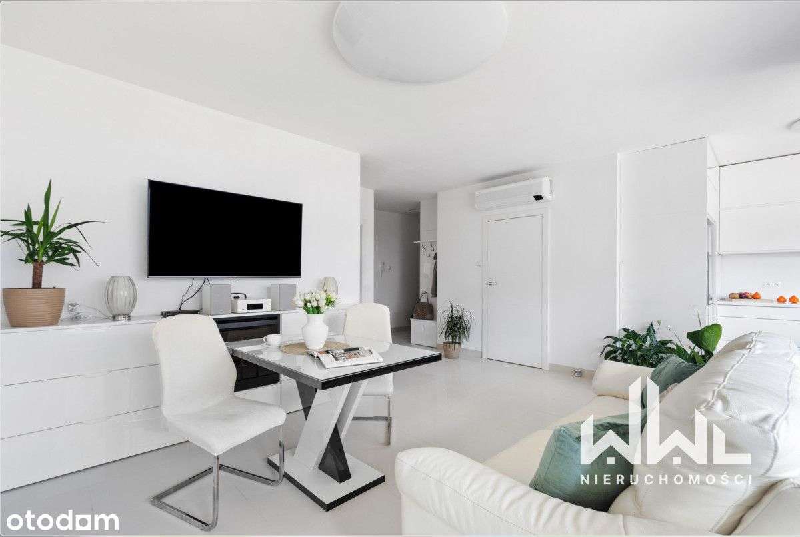
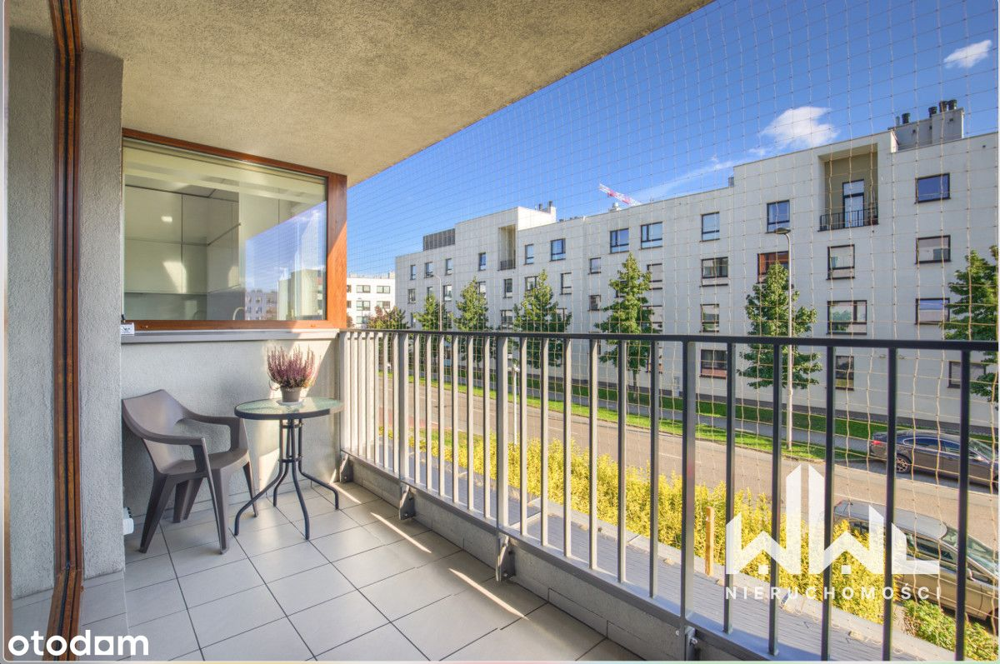
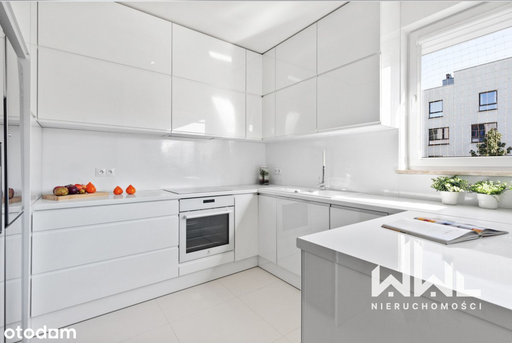
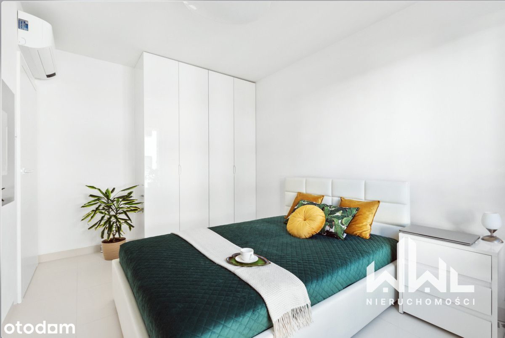
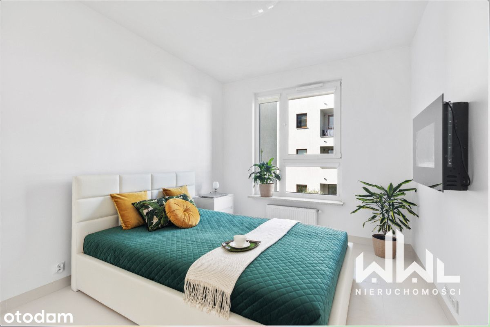
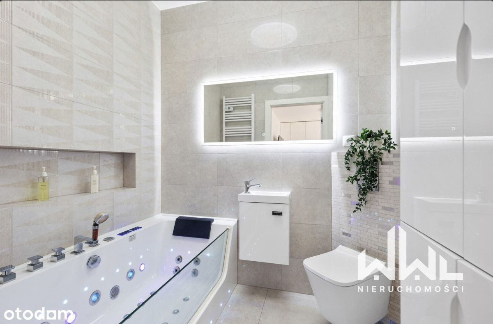
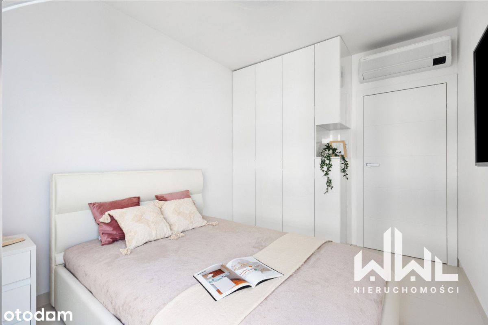
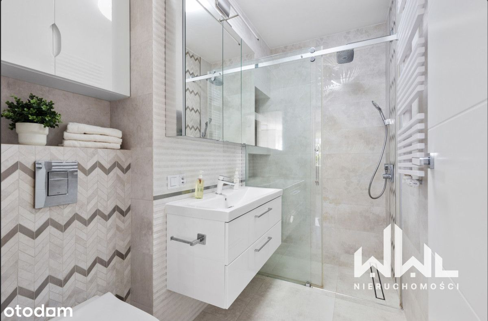
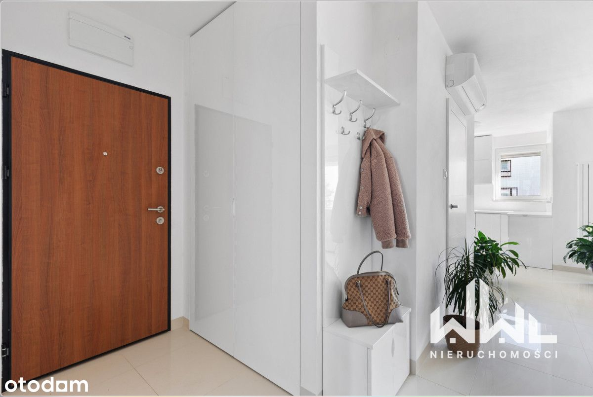
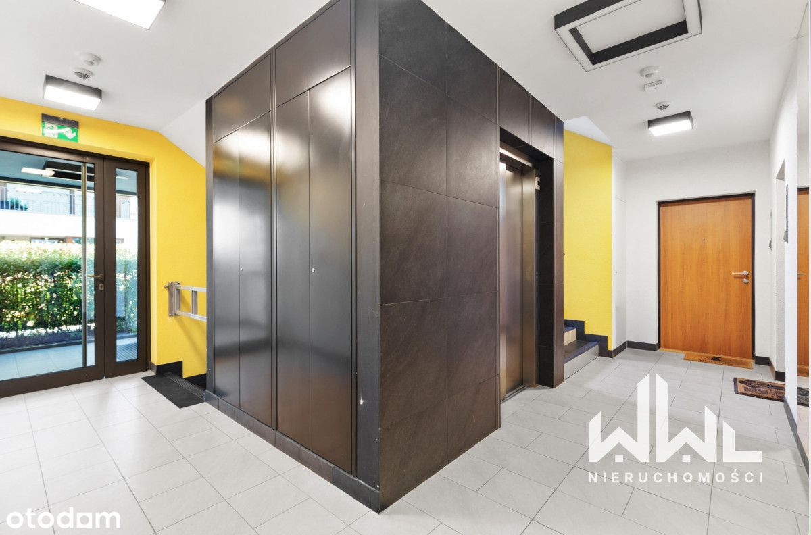
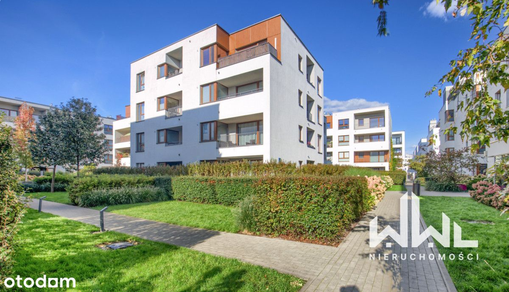
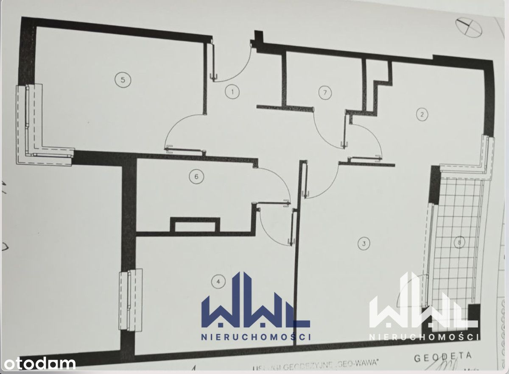